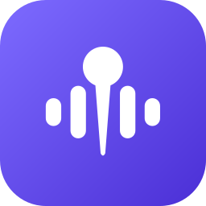

Priority lists
Separate lists for input and output. The first connected, enabled device is always the system default — if it's gone, the next one takes over.
Stops macOS from hijacking your audio devices. Connect AirPods and macOS switches your mic to theirs; plug in a monitor and the sound jumps to its speakers. AudioPin notices instantly and puts your preferred devices back.
macOS 27 or later · Apple silicon · No permissions needed
Swift 6.4 · SwiftUI · Core Audio · zero dependencies
AudioPin only reads and changes which device is the system default. It never opens an audio stream, so macOS never asks for microphone access. No analytics, no network requests — your settings stay on your Mac.
“macOS follows a simple rule: the last connected device wins. That is rarely what you want.”
From the AudioPin README
Separate lists for input and output. The first connected, enabled device is always the system default — if it's gone, the next one takes over.
Disable devices you never want picked. New Bluetooth and iPhone Continuity mics start disabled. One switch pauses everything.
Reverts unwanted switches in a fraction of a second, then backs off instead of fighting. Runs in the background with no Dock icon.
AudioPin talks directly to the Core Audio hardware abstraction layer. No audio routing, no virtual devices — it only changes which device is the system default.
In Zoom, Teams or Discord, set the microphone and speaker to Same as System — then they follow AudioPin too.
Registers property listeners for the device list and for the default input, output and system output devices. No polling.
kAudioHardwarePropertyDevices · DefaultInputDevice · DefaultOutputDevice · DefaultSystemOutputDevice
Every change triggers a short, debounced reconcile: resolve each saved device by its stable UID, pick the first connected and enabled one, make it the default. USB devices that get a new UID on another port are matched by model and name.
uid → first connected & enabled → set default
Bluetooth devices often trigger a second switch, so after a device connects AudioPin checks again over the next few seconds. Every correction is verified.
re-check 0.8 · 1.6 · 3 · 5 s · verify +1 · +3 s
If something keeps switching the device back, AudioPin stops fighting instead of looping.
max 6 / 20 s per direction → 30 s back-off
One DMG, one drag, one trip to System Settings the first time you open it.
Then open it from the Applications folder.
The first time, macOS blocks it. Here's why, and what to do.
A pin icon appears in the menu bar. Click a device to make it your favorite, or right-click it to move it or disable it. On first open, AudioPin asks whether to launch at login.
Requires Xcode 27 or later. The script builds a release with Swift Package Manager, ad-hoc signs AudioPin.app, copies it to ~/Applications and launches it.
Apple notarization requires a paid developer account, and AudioPin is a free side project, so the app is not notarized. Gatekeeper blocks it on first launch. To allow it, try to open AudioPin once and dismiss the warning, then go to System Settings → Privacy & Security, scroll down, click Open Anyway and confirm.
Or run xattr -dr com.apple.quarantine /Applications/AudioPin.app in Terminal. The full source is on GitHub if you'd rather build it yourself.
No. It only reads and changes which device is the system default. It never opens an audio stream, so macOS never asks for microphone permission.
Some apps open a specific device instead of following the system default. Set their microphone and speaker to Same as System and they will follow AudioPin.
AudioPin can't tell whether you or macOS made the change, so while it's active it restores your order either way. To switch, click a device in the AudioPin menu (it becomes your favorite), or pause AudioPin with the switch at the top.
Macs with Apple silicon running macOS 27 or later.
Yes. AudioPin is open source under the MIT license. It has no analytics, no accounts and makes no network requests. Settings are stored locally on your Mac.
Quit AudioPin from its menu and move it from Applications to the Trash. To also remove its settings, run defaults delete dev.mjozefiak.AudioPin.
The app is available in English and Polish and follows your macOS language. Translations are welcome on GitHub.

Free, open source and native to your Mac.